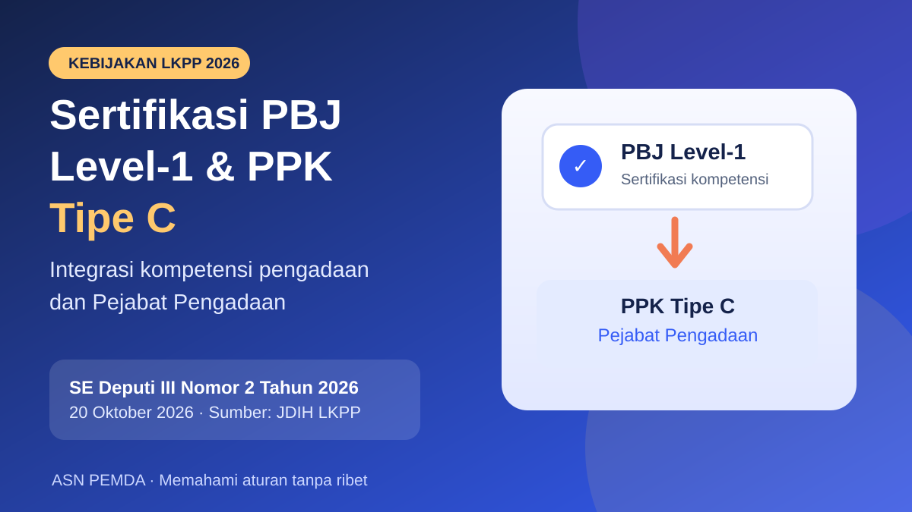

Sertifikasi PBJ Level-1 dan PPK Tipe C: Apa yang Perlu ASN Tahu?
LKPP menerbitkan SE Deputi III Nomor 2 Tahun 2026 mengenai integrasi sertifikasi kompetensi PBJ Level-1, PPK Tipe C dan Pejabat Pengadaan. Berikut hal yang sudah pasti dan langkah yang perlu dicermati ASN.

SE Deputi III LKPP Nomor 2 Tahun 2026 tercatat tertanggal 20 Oktober 2026. Rincian mekanisme integrasi belum dikonfirmasi dari naskah lengkap.
Versi Mudahnya
LKPP mencantumkan SE baru mengenai integrasi skema sertifikasi. ASN yang menangani pengadaan barang/jasa (PBJ), unit kerja pengadaan (UKPBJ), dan kepegawaian daerah (BKPSDM) perlu memeriksa naskah lengkap sebelum mengubah persyaratan atau penugasan. Jangan menyimpulkan bahwa sertifikat lama otomatis dikonversi.
LKPP menerbitkan surat edaran tentang penggabungan skema sertifikasi.
Pegawai pengadaan, unit pengadaan, dan bagian kepegawaian.
Periksa isi surat edaran sebelum mengubah syarat atau penugasan.
Apa yang berubah?
JDIH LKPP mencatat Surat Edaran Deputi III Nomor 2 Tahun 2026 pada 20 Oktober 2026, berjudul Integrasi Sertifikasi Kompetensi Pengadaan Barang/Jasa Pemerintah Level-1 dengan Sertifikasi Kompetensi Pejabat Pembuat Komitmen Tipe C dan Pejabat Pengadaan.
Artinya, arah kebijakan yang dibahas memang menyangkut hubungan antarskema sertifikasi tersebut. Namun judul dan metadata JDIH saja belum cukup untuk memastikan mekanisme pengakuan, syarat tambahan, masa transisi, atau tanggal implementasi teknis.
Dampak buat ASN di OPD
- Pegawai yang sudah punya sertifikat Level-1: cek apakah dan bagaimana kompetensi yang sudah dimiliki diakui dalam skema baru. Jangan menganggap ada konversi otomatis.
- Calon PPK Tipe C atau Pejabat Pengadaan: pastikan jalur sertifikasi yang tepat sebelum mendaftar pelatihan atau uji kompetensi.
- Pengelola PBJ dan BKPSDM: periksa kesesuaian dokumen kompetensi pegawai dengan persyaratan penugasan yang berlaku.
Dampak buat pemda dan BPKAD
Unit keuangan daerah dan perangkat daerah perlu mewaspadai perubahan persyaratan administratif bagi personel pengadaan, khususnya ketika menyusun penugasan, pembinaan kompetensi, dan pengendalian dokumen. Surat edaran sertifikasi tidak boleh langsung ditafsirkan sebagai perubahan prosedur SP2D atau kewenangan pembayaran. Itu urusan aturan dan sistem yang berbeda.
Perlu ngapain sekarang?
- Buka daftar produk hukum di JDIH LKPP dan unduh naskah Surat Edaran Deputi III Nomor 2 Tahun 2026.
- Periksa bagian sasaran, persyaratan, transisi, pengakuan sertifikat, dan tanggal pelaksanaan.
- Cocokkan dengan kebutuhan sertifikasi pegawai yang sedang atau akan ditugaskan.
- Jangan mengubah SOP atau menyampaikan kepastian konversi sebelum dasar teknisnya jelas.
Rincian mekanisme integrasi, apakah ada pengakuan otomatis, serta ketentuan transisi belum diverifikasi dari naskah lengkap SE. Artikel ini sengaja tidak mengarang ketentuan yang belum terbaca.
Bedakan tiga istilah sertifikasi ini dulu
Di lapangan, istilah sertifikat PBJ Level-1, sertifikasi PPK Tipe C, dan sertifikasi Pejabat Pengadaan sering disebut dalam satu percakapan. Padahal, istilah tersebut merujuk pada kebutuhan kompetensi dan fungsi yang tidak persis sama. Sertifikasi Level-1 berkaitan dengan penguasaan kompetensi dasar pengadaan barang/jasa. Sementara itu, PPK Tipe C berkaitan dengan kemampuan menjalankan peran PPK pada pekerjaan yang relatif sederhana. Pejabat Pengadaan menjalankan fungsi tersendiri dalam proses pengadaan sesuai ketentuan yang berlaku. Karena itu, kata integrasi dalam judul surat edaran perlu dibaca melalui mekanisme resminya, bukan diartikan sebagai penyamaan seluruh kewenangan.
Contoh sederhana: seorang ASN telah lulus sertifikasi Level-1, tetapi belum pernah ditugaskan menjadi PPK. Sertifikat tersebut merupakan bekal kompetensi yang penting. Namun, untuk menentukan apakah ASN tersebut dapat mengikuti skema PPK Tipe C, instansi tetap perlu memeriksa persyaratan sertifikasi, dokumen penugasan, pengalaman atau portofolio, serta aturan terbaru. Begitu pula pegawai yang sudah memiliki sertifikat kompetensi tertentu: jangan menganggap penetapan jabatan atau kewenangan terjadi otomatis hanya karena ada kebijakan integrasi.
Apa dasar aturan yang sudah tersedia sebelum SE 2026?
Untuk memahami konteksnya, ada dua rujukan resmi yang patut dibaca bersamaan. Pertama, Keputusan Deputi III LKPP Nomor 18 Tahun 2025 memuat pedoman sertifikasi kompetensi PBJ Level-1 dan PPK Tipe C dalam rangka mendukung program serta kegiatan prioritas nasional. Kedua, Surat Edaran Kepala LKPP Nomor 1 Tahun 2024 membahas pemenuhan kebutuhan PPK bersertifikat kompetensi, termasuk pentingnya rencana aksi pada kementerian, lembaga, dan pemerintah daerah. Kedua dokumen ini merupakan konteks kebijakan terdahulu; bukan bukti bahwa seluruh mekanisme baru pada SE Oktober 2026 sudah diketahui.
Dalam ketentuan sertifikasi PPK Tipe C yang telah dipublikasikan sebelumnya, terdapat persyaratan terkait pendidikan atau golongan, sertifikat PBJ, penugasan atau rekomendasi, serta bukti pengalaman maupun pelatihan. Detailnya bisa berbeda menurut jalur dan kebijakan yang sedang berlaku. Karena itulah pegawai sebaiknya menghindari kesimpulan berdasarkan potongan informasi di media sosial. Rujukan paling aman tetap dokumen resmi yang sesuai dengan waktu pendaftaran atau pelaksanaan sertifikasi.
Simulasi kasus yang sering muncul di OPD
Kasus 1: Bendahara atau staf keuangan memiliki sertifikat Level-1
Sertifikat Level-1 dapat menjadi modal pemahaman proses pengadaan. Tetapi bendahara pengeluaran dan PPK memiliki fungsi, tanggung jawab, serta dasar penugasan yang berbeda. Pemilik sertifikat tidak otomatis dapat mengambil alih fungsi PPK, apalagi mengubah tahapan administrasi pembayaran. Sebelum merencanakan penugasan, OPD harus memastikan pembagian tugas, ketentuan konflik kepentingan, dan kecukupan kompetensi personel.
Kasus 2: OPD kekurangan calon PPK Tipe C
Masalah ini perlu ditangani sebagai kebutuhan kelembagaan, bukan hanya persoalan seorang pegawai harus mengikuti ujian. Petakan pekerjaan sederhana yang memerlukan PPK, daftar personel yang sudah memiliki sertifikat, calon peserta pelatihan, dan dokumen yang masih kurang. Hasil pemetaan menjadi bahan koordinasi dengan UKPBJ, BKPSDM, dan pejabat berwenang. Rencana aksi pemenuhan PPK bersertifikat kompetensi juga perlu dicocokkan dengan ketentuan LKPP yang masih berlaku.
Kasus 3: Pegawai ingin mengambil dua sertifikasi sekaligus
Jangan terburu-buru membayar atau mendaftar pelatihan tambahan hanya karena membaca kata integrasi. Periksa lebih dulu apakah program yang dituju merupakan sertifikasi, pelatihan persiapan, atau pengakuan kompetensi. Ketiganya bisa memiliki keluaran dan persyaratan yang berbeda. Bila penyelenggara menawarkan klaim penyetaraan instan, mintalah rujukan tertulis yang dapat diverifikasi dari LKPP.
Checklist praktis untuk UKPBJ, BKPSDM, dan OPD
- UKPBJ: inventarisasi kebutuhan PPK berdasarkan kompleksitas paket dan ketersediaan personel; identifikasi sertifikat yang dimiliki serta yang akan kedaluwarsa bila berlaku masa tertentu.
- BKPSDM: koordinasikan data kompetensi, rencana pengembangan SDM, surat tugas, dan jadwal pelatihan agar tidak ada pegawai yang mengikuti jalur yang keliru.
- PA/KPA dan pimpinan OPD: pastikan penunjukan personel memenuhi persyaratan yang berlaku; jangan menyamakan kelulusan pelatihan dengan keputusan penetapan jabatan.
- ASN calon peserta: simpan dokumen sertifikat, transkrip atau hasil pelatihan, bukti pengalaman, serta surat rekomendasi dalam arsip digital yang mudah ditelusuri.
- Pengelola keuangan: pertahankan pemisahan fungsi pengadaan, pengujian tagihan, dan pembayaran sesuai ketentuan yang berlaku. Kebijakan sertifikasi tidak dengan sendirinya mengubah prosedur SIPD RI maupun SP2D.
Pertanyaan yang sering ditanyakan
Apakah sertifikat PBJ Level-1 otomatis menjadi sertifikat PPK Tipe C?
Belum dapat disimpulkan demikian hanya dari judul SE Nomor 2 Tahun 2026. Pengakuan kompetensi, persyaratan tambahan, serta prosedur sertifikasi harus dibaca dari naskah resmi dan petunjuk pelaksanaannya. Sampai mekanismenya terverifikasi, anggap keduanya sebagai dokumen yang perlu diperiksa sesuai fungsi masing-masing.
Apakah ASN yang bukan pejabat fungsional pengadaan dapat mengikuti sertifikasi?
Kelayakan peserta ditentukan oleh persyaratan skema yang berlaku, bukan sekadar nama jabatan sehari-hari. Rujukan resmi sebelumnya menunjukkan adanya jalur bagi personel yang menjalankan tugas pengadaan dan memenuhi ketentuan tertentu. Calon peserta tetap perlu memeriksa persyaratan terkini pada kanal sertifikasi LKPP.
Apakah kebijakan ini langsung memengaruhi APBD?
Dampak langsungnya lebih berkaitan dengan tata kelola kompetensi dan kesiapan personel pengadaan. Dampak tidak langsung dapat muncul pada perencanaan pelatihan atau kelancaran pelaksanaan paket kegiatan. Namun tidak ada dasar untuk menyatakan bahwa SE sertifikasi ini mengubah pagu APBD, SPD, SPM, atau prosedur SP2D.
Kesimpulan untuk sesama ASN
Perkembangan ini penting karena kapasitas SDM pengadaan sering menentukan seberapa siap OPD melaksanakan kegiatan. Namun, langkah yang tepat bukan langsung mengubah penugasan atau menyebarkan klaim konversi otomatis. Mulailah dari membaca dokumen resmi, memetakan kebutuhan personel, dan memastikan jalur sertifikasi yang relevan. Artikel ini merupakan penjelasan independen untuk membantu pembaca memahami konteks kebijakan, bukan pengganti keputusan pejabat berwenang atau petunjuk resmi LKPP.
Bacaan primer tambahan: Keputusan Deputi III LKPP Nomor 18 Tahun 2025; SE Kepala LKPP Nomor 1 Tahun 2024; dan Informasi sertifikasi Level-1 LKPP.
Bagaimana menilai informasi sertifikasi yang beredar?
Berita sertifikasi biasanya cepat menyebar melalui grup percakapan pegawai. Sebagian informasi memang berasal dari pengumuman resmi, tetapi sebagian lain merupakan rangkuman pribadi, promosi pelatihan, atau pengalaman peserta pada periode sebelumnya. Ketiganya tidak boleh diperlakukan setara. Jika ada pesan yang menyebut semua sertifikat lama otomatis berubah menjadi sertifikat baru, periksa apakah pesan itu menyertakan nomor aturan, tanggal penetapan, dan bagian naskah yang menjelaskan mekanismenya. Tanpa itu, informasi tersebut belum cukup menjadi dasar tindakan administratif.
Perhatikan juga perbedaan antara tanggal terbit surat edaran, tanggal mulai pelaksanaan suatu program, dan batas akhir pendaftaran peserta. Ketiga tanggal itu bisa berbeda. Apabila suatu ketentuan transisi memang tersedia, instansi perlu membaca siapa yang termasuk dalam cakupan transisi, dokumen apa yang wajib dilengkapi, dan siapa pejabat atau lembaga yang berwenang memverifikasi. Hindari menyalin syarat dari poster pelatihan lama tanpa membandingkannya dengan petunjuk terbaru.
Rencana tindak lanjut yang realistis selama satu minggu
Pada hari pertama, unit pengadaan dapat mengumpulkan daftar pegawai yang memiliki sertifikat PBJ Level-1, sertifikat PPK Tipe C, atau bukti kompetensi lain yang relevan. Hari kedua, cocokkan daftar tersebut dengan kebutuhan paket pengadaan dan pembagian tugas masing-masing OPD. Hari ketiga, inventarisasi kekurangan dokumen seperti surat tugas, rekomendasi, atau bukti pengalaman. Hari keempat, koordinasikan hasilnya dengan BKPSDM dan pihak yang menangani pembinaan kompetensi. Hari kelima, periksa kanal resmi LKPP untuk pembaruan teknis dan susun daftar pertanyaan yang belum terjawab.
Langkah tersebut merupakan contoh tata kelola internal, bukan tenggat resmi dari LKPP. Setiap pemerintah daerah bisa menyesuaikannya dengan kapasitas personel dan kebutuhan pengadaan. Tujuannya sederhana: ketika petunjuk teknis integrasi sudah jelas, pemda tidak perlu memulai pendataan dari nol. Data yang rapi juga membantu menghindari pelatihan berulang yang tidak dibutuhkan serta mengurangi risiko penugasan pegawai tanpa dokumen pendukung yang memadai.
Bagi pegawai yang ingin mengembangkan karier, kebijakan sertifikasi sebaiknya dibaca sebagai kesempatan meningkatkan kompetensi, bukan jaminan promosi atau penambahan tunjangan. Kelulusan sertifikasi, penugasan sebagai pejabat pengadaan, dan pengangkatan ke jabatan tertentu mengikuti jalur keputusan yang berbeda. Tanyakan kepada unit kepegawaian mengenai relevansi sertifikasi terhadap rencana pengembangan kompetensi pribadi dan kebutuhan organisasi sebelum mengambil keputusan.
Sumber resmi
JDIH LKPP — Surat Edaran Deputi III Nomor 2 Tahun 2026, tentang integrasi sertifikasi kompetensi PBJ Level-1, PPK Tipe C, dan Pejabat Pengadaan. Diakses 23 Oktober 2026.
Penjelasan independen; bukan instruksi resmi. Cek ketentuan dan pejabat berwenang di instansi masing-masing.
Apakah artikel ini membantu?
Komentar rekan ASN
Tanggapi isi artikel atau berbagi pengalaman yang relevan. Tidak perlu akun dan email.
Komentar ditinjau sebelum ditampilkan. Jangan kirim NIP, nomor rekening, kata sandi, token, dokumen kerja, atau data pribadi. Baca kebijakan privasi.
Memuat komentar…